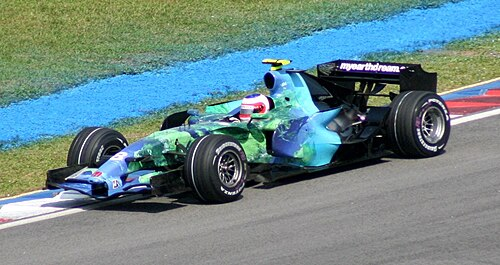
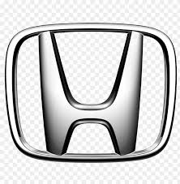
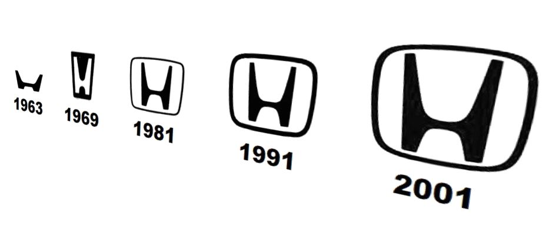

Története
Motorgyártás
A Honda és a Motor szó összekapcsolása eleinte szándékos volt.
A Honda Motor gyökereit az 1930-as években találjuk, amikor Honda Szóicsiró cége, a Tókai Szeiki Dzsúkógjó Kabusikigaisa nehézipari vállalat elkezdett présöntött dugattyúgyűrűket gyártani. Az öntvények ridegek voltak, és rendre eltörtek, ezért Honda esti kurzuson elkezdett kohászatot tanulni, míg végül sikerrel járt. Apró cége túlélte a háborút követő gazdasági összeomlást. Prosperáló vállalatként vette ki részét Japán feltámadásából, és a tökéletesen kidolgozott részleteket és egyensúlyt igénylő motorkerékpár-gyártással alapozta meg hírnevét. Mire a vállalat elkezdett gépkocsikat gyártani, mérnökei és kereskedői már számos sikert tudhattak maguk mögött. A Honda motorkerékpárok a világ versenypályáin bizonyították képességeiket, és hamarosan a közutakon is legendává váltak.
A korábban mezőgazdasági járművekben használt kétütemű Mikuni motorok primitívek és aprók voltak, rossz hatásfokkal működtek. Azonban kis méretüknél fogva be lehetett őket szerelni egy kerékpár vázába, igaz, a vezetőknek emelkedőkön pedálozniuk kellett. Ám a pusztulásból talpra álló országban a legkezdetlegesebb motorizált jármű is létfontosságú volt. A mindig túlzsúfolt buszok és vonatok megbízhatatlanul jártak, a személyautók pedig az üzemanyaghiány miatt gyakorlatilag hasznavehetetlenek voltak. Ez az egyszerű kis robogó azonnal sikeres lett. Tömegekben özönlöttek a vásárlók, hogy hozzájuthassanak a naponta egy példányban gyártott Honda kerékpármotorhoz.
Amikor 1947-ben elfogytak a háborúból megmaradt Mikuni kétütemű motorok, Honda saját pénzén kifejlesztett egy 50 köbcentiméteres motort. Ez volt az A-típus: egy mágneses gyújtású motor, a hátsó kerékhez vezető szíjhajtással, az utas lábát burkolat védte a hajtószíjtól. A továbbra is súlyos üzemanyaghiány kiküszöbölésére Honda felvásárolt egy fenyőerdőt, és a fákból nyert gyantát benzinnel keverve egyfajta terpentinszeszt állított elő.
Honda a Formula–1-ben
|
Rubens Barrichello a Hondával, a 2007-es maláj nagydíjon A Honda Racing F1 Team a japán Honda autógyár Formula–1-es csapata. Korábban a BAR csapatnak szállított motorokat. A csapat székhelye az Egyesült Királyságban, Brackleyben van. 2006-ban tért vissza a Formula–1-be önálló csapatként, versenyzőállása Jenson Button és Rubens Barrichello volt. 2008 után a gazdasági válságra hivatkozva kiszálltak a sportágból. A csapat utódja a Brawn GP lett, tulajdonosa és csapatfőnöke Ross Brawn, versenyzői pedig Jenson Button és Rubens Barrichello. A Brawn GP annak ellenére, hogy Button révén megnyerte az egyéni világbajnokságot, valamint megnyerték a konstruktőri világbajnokságot is, nem volt hosszú életű. A V6-os turbó és hibrid erőforrások megjelenésével, 2015-ben a Honda is jelezte nevezési szándékát, ám ezúttal nem önálló csapattal, hanem a nyolcvanas évek legendás párosítását felelevenítve a McLaren motorszállítójaként. A McLaren és a Honda 2017 év végén jelentették be a közös együttműködésük végét, majd 2018-tól a Toro Rosso-nak (később AlphaTauri), 2019-től pedig a Red Bull Racing-nek lett a motorszállítója egészen a 2021-es újabb kiszállásig. |
 |
Logo

Honda logo fejlődése
